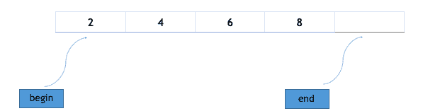

STL 中的数组容器
众所周知，数组是同质对象的集合。STL 中的数组容器为我们提供了静态数组的实现，尽管它在竞争性编程中很少使用，因为它本质上是静态的，但我们仍然会讨论数组容器，因为它提供了一些成员函数和非成员函数，这使它比经典定义的数组有优势，比如 int array_name[array_size]。
数组容器的语法:
array<object_type, array_size> array_name;
上面的代码创建了一个空的对象类型数组，其最大大小为数组大小。但是，如果要创建一个包含元素的数组，只需使用 = 操作符即可，下面是一个例子:
#include <vector>
int main()
{
array<int, 4> odd_numbers = { 2, 4, 6, 8 };
}
上面的语句将创建一个数组，数组中的数据为 2，4，6，8。请注意，只有在 c++ 17 中才能使用{}括号进行初始化。
数组模板的成员函数
以下是数组模板中最重要和最常用的成员函数。
at功能
此方法返回数组中给定范围内的值。如果给定范围大于数组大小，则抛出超出范围异常。下面的代码片段解释了这个操作符的用法:
#include <iostream>
#include <array>
using namespace std;
int main ()
{
array<int,10> array1 = {1,2,3,4,5,6,7,8,9};
cout << array1.**at**(2) // prints 3
cout << array1.**at**(4) // prints 5
}
[ ]运算符
运算符 [ ] 的使用与普通数组相同。它返回数组中给定位置的值。示例:在上面的代码中，语句cout << array1[5];将在控制台上打印 6，因为 6 在数组 1 中有索引 5。
front()功能
此方法返回数组中的第一个元素。
back()功能
此方法返回数组中的最后一个元素。这里需要注意的是，如果数组没有完全填充，back()将返回数组中最右边的元素。
fill()功能
此方法将给定值赋给数组的每个元素，例如:
#include <array>
int main()
{
array<int,8> myarray;
myarray.**fill**(1);
}
这将在数组 myarray 的所有 8 个可用位置用值 1 填充数组 my array。
swap功能
此方法交换相同类型和相同大小的两个数组的内容。它按索引方式交换，因此第一个数组的索引 i 的元素将与第二个数组的索引 i 的元素交换，如果交换这两个元素中的任何一个都需要 execption，swap()将引发异常。下面是一个演示其用法的示例:
#include <array>
int main()
{
array<int,8> a = {1,2,3,4,5,6,7,8};
array<int,8> b = {8,7,6,5,4,3,2,1};
a.**swap**(b) // swaps array a and b
cout << "a is : ";
for(int i=0; i < 8; i++) {
cout << a[i] <<" ";
}
cout << endl;
cout << "b is : ";
for(int i=0; i < 8; i++) {
cout << a[i] <<" ";
}
/* ouput will be
a is : 8 7 6 5 4 3 2 1
b is : 1 2 3 4 5 6 7 8 */
}
运算符(==，！=，>，< , > =，< =)
所有这些运算符都可以用来按字典顺序比较两个数组的值。
empty功能
这个方法可以用来检查数组是否为空。
语法:array_name.empty()，如果数组为空则返回真，否则返回假。
size功能
此方法返回数组中存在的元质数量。
max_size功能
此方法返回数组的最大大小。
begin功能
这个方法返回指向数组第一个元素的迭代器。迭代器就像指针，我们将在以后的课程中讨论它们，因为现在你可以把迭代器想象成指向数组的指针。

end功能
这个方法返回一个迭代器，指向数组中最后一个元素旁边的元素，例如上面的数组有 4 个元素，end()调用将返回指向数组第 4 个索引的迭代器。